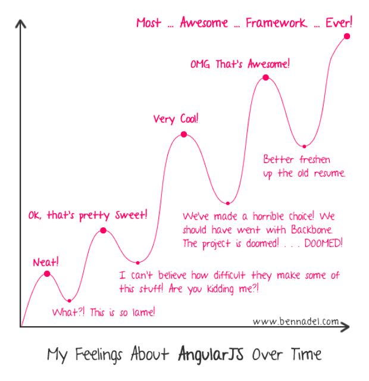
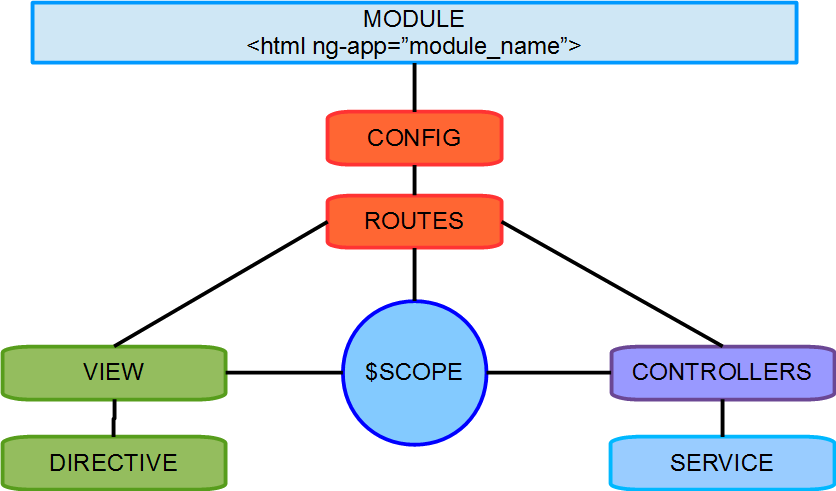
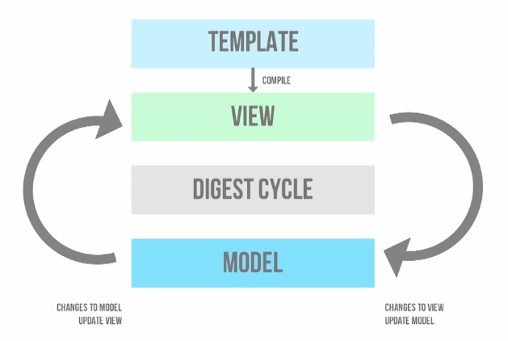

What we gonna talk today ?
And what you should know ?
AngularJS !!!
What is it ?
Why should we learn it ?
History of AngularJS
THE GUY !!
Let's get started !!
Learning Curve !!
The Big Picture
Terms to know
Single Page Application
MVC,MVVM,MVP, MV*
Two Way Data Binding
Dependency Injection
Framework vs Library
Module
Config Block
Run Block
module.constant
register a constant service with the module
store configurations
application wide variables
which do not change
array syntax format
.run(['VERSION','$rootScope',function(VERSION,$rootScope){
alert(VERSION);
}]);
Controller & $scope
$scope is the glue between controller and view
$scope provides context
$scope vs $rootScope
Whats the difference?
Methods and Properties on $scope
AngularJS allows you to bind methods as well as simple values
Routing
Used to provide deep linking.
Used to decide what View is to be loaded.
Requires separate sub-module
Angular Router
URL based.
Requires ngRoute sub-module
Use $routeProvider to define routes.
Maps the URL to a View and Controller combo.
UI Router
Views are based on state of Application.
Requires ui.router sub-module
Use $stateProvider to define routes.
Maps the state to a View and Controller combo.
Allows nesting of views.
Views
Is AngularJS compiled DOM
is the product of the $compile merging the html template with $scope
How Views Work?
Services

$http Service
core Angular Service
facilitates communication with remote HTTP servers
using XHR object or JSONP
is based on the deferred/promise API exposed by the $q service.
$http methods (REST)
$http.get
$http.post
$http.put
$http.delete
PROMISES
returned value of calling $http is a promise
use then method to register callbacks
callbacks recieve a single argument
an object representing the response.
Communication between controllers
Controllers should not talk to each other
use service to facilitate communication
$broadcast sends events downwards
$emit sends events upwards
$on listens for events
$rootScope
Directives
attaches specified behaviour to existing DOM elements or create new elements
Things a directive can do
manipulate DOM
iterate through data
Handle events
Modify CSS
Validate data
Data Binding
In-built Directives
Types
Layout Directives
Interaction Directives
Layout Directives
ngif
ngShow/ngHide
ngRepeat
ngSwitch
ngInclude
Interaction Directives
ngModel
ngBlur/ngFocus
ngClick
ngSubmit
Styling Directives
ngClass
The Big Picture
Custom Directives
Naming Convention
camelCase
snake-case,colon,underscore
$compile, $digest, $apply services
Directive Definition Object
tells the compiler how a directive is supposed to be assembled.
Fields which can be used in a directive definition
name, restrict, priority, terminal
link, template, templateURL, replace
transclude, scope, controller, require, compile
Replace
Replace DOM element it is defined on with the directive template
Restrict
Restricts the definition of the directive
E-Element
C-Class
M-Comment
A-Attribute
Template URL
Replaces current content of DOM element with content of template loaded via templateUrl.
Scope
Shared Scope - Directives share scope with the enclosed controller
Isolated Scope - Directives and Controllers have different scope. Data is not shared.
Isolated Scope Properties
@ - to access string values
= - to access object value and two way binding
& - to bind external function
Link Function
is where the DOM manipulation happens
comes with scope, element, attrs
element is a jQuery instance of the DOM element the directive is declared on.
attrs is a list of attributes declared on the element.
Controller Function
is constructed during the pre-linking phase
recieves $scope which is the current scope for the element.
Testing
Unit Testing
E2E Testing
Unit Testing
The primary goal of unit Testing is to take the smallest piece of testable software in the application, isolate it from the remainder of the code, and determine whether it behaves exactly as you expect.

npm install karma --save-dev
npm install -g karma-cli
npm install karma-jasmine karma-chrome-launcher --save-dev
karma init
karma start
karma run

Developed by Pivotal Labs
syntax pretty similar to most famous testing framework, RSpec.
Things to know
Suites: describe Your Tests
Specs
Expectations
Matchers
in jasmine, we begin by creating a test suite with the global describe function that wraps our specs.
specs are defined by the global function it.
inside the spec we can describe our expectations by using the expect function chained to a matcher function
describe("A suite", function() {
it("contains spec with an expectation", function() {
expect(true).toBe(true);
});
});
we can run code before and after each spec in a suite block using the beforeEach and afterEach functions.
describe("A suite", function() {
beforeEach(function(){//execute before each spec})
it("contains spec with an expectation", function() {
expect(true).toBe(true);
});
afterEach(function() {//execute after each spec})
});
Testing in Angular
angular.js
angular-mocks.js
karma.conf.js
Code
Test specs
List of commonly used matchers
toBe, toEqual, toMatch, toBeDefined()
not.toBeDefined(), toBeNull(), not.toBeNull(), toBeFalsy()
toBeTruthy(), toBeLessThan(2), toBeGreaterThan(4)
Testing Controllers
In order to test controllers, we need to hold an instance of the controller, initialize a scope for it and test our expectations against that scope.
describe("Testing a Controller", function() {
// get the module that contains the controller
beforeEach(module('NameOfModule'));
// inject the $controller and $rootScope
beforeEach(inject(function($rootScope,$controller){
//create a fresh new scope for the controller
scope = $rootScope.new();
//create a controller with this scope
ctrl = $controller('ControllerName',{$scope: scope});
}));
});
Testing Services
In order to test services we need to use the $injector to get an instance of the service
describe("Testing a Service", function() {
// get the module that contains the service
beforeEach(module('NameOfModule'));
// inject the $injector
beforeEach(inject(function($injector){
//use the $injector to get a hold of the service
service = $injector.get('ServiceName');
}));
});
Testing Directives
In order to test a directive, we need to create an element that will host the directive and compile it with a scope.
In our spec, we need to trigger the digest.
describe("Testing a Directive", function() {
// get the module that contains the service
beforeEach(module('NameOfModule'));
// inject the $compile service and the $rootScope
beforeEach(inject(function($compile,$rootScope){
// use the $rootScope to create a scope for the directive
scope = $rootScope;
// create an angular element from a HTML string.
element = angular.element('')
// compile the element with the scope
$compile(element(scope))
scope.$apply()
}));
});
Testing http Requests
the $httpBackend is a fake HTTP Back-end implementation. in the most basic use we can verify that a request is made & stub responses
describe("Testing a Backend", function() {
// inject the $httpBackend service and the $rootScope
beforeEach(inject(function($httpBackend){
// use the $rootScope to create a scope for the directive
httpBackend = $httpBackend;
}));
it("something that makes a request", function(){
//expect a request
httpBackend.expectGET('/api').respond(200);
//code that make a request
httpBackend.flush(); // don't forget to flush.
});
});